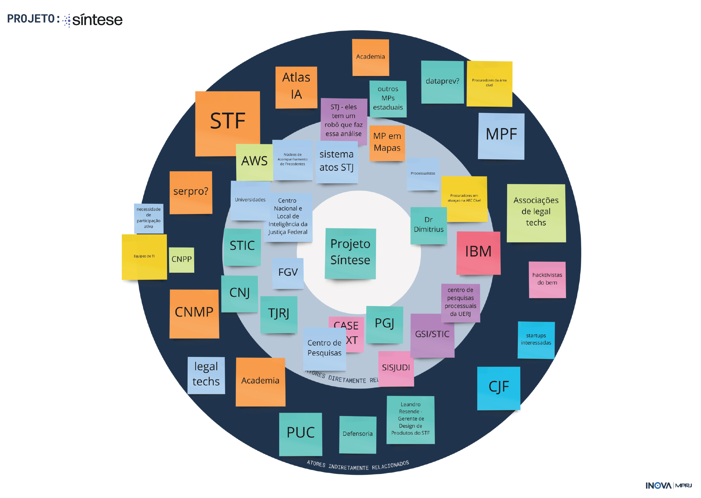
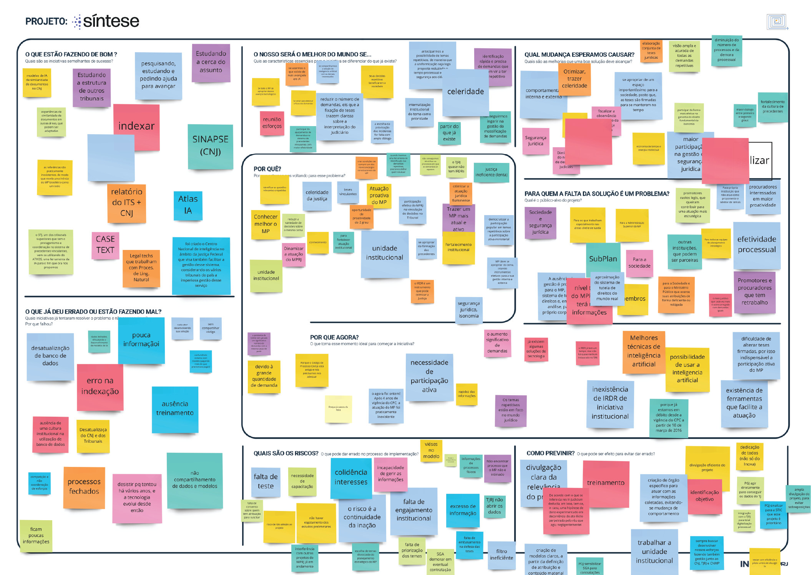
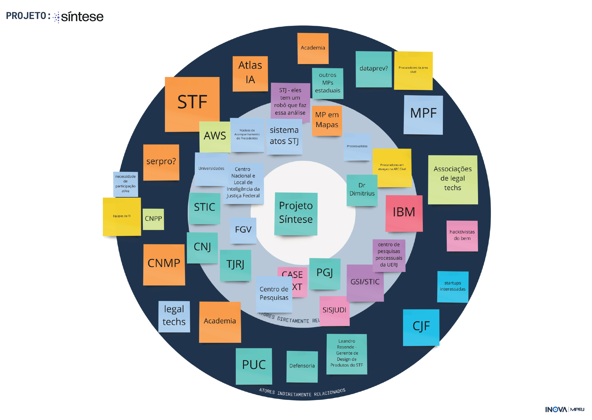
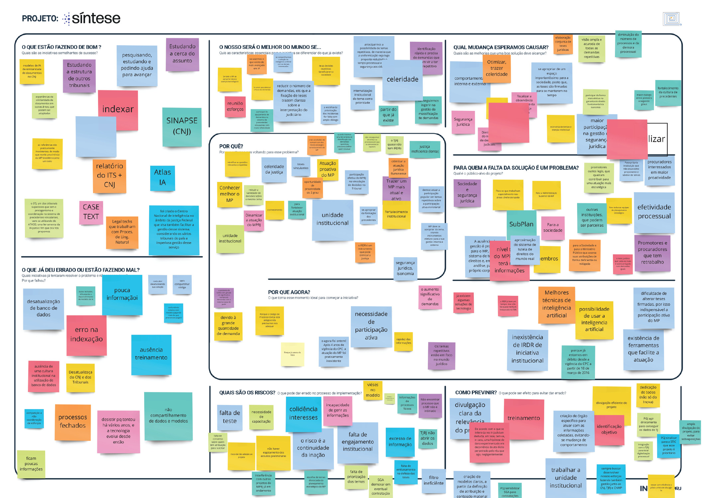
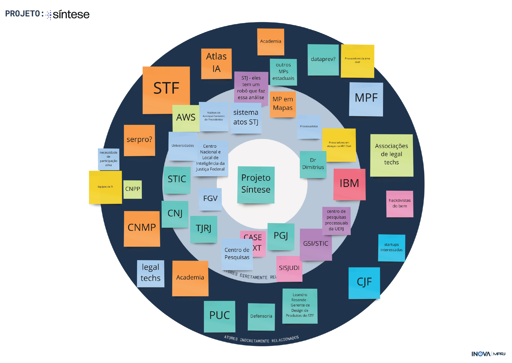
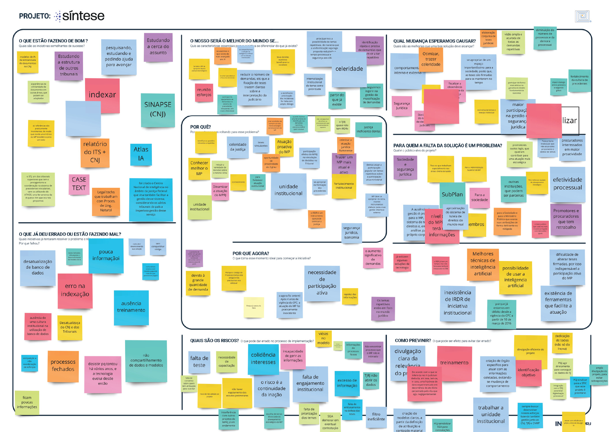

etapas
Exploração coletiva do desafio
Mapeamento de atores
Pesquisa e formação de rede
Geração de alternativas
Estratégia de implementação
Produção
de relatório
Campanha de comunicação
 

tema do desafio demandas repetitivas
tipo de demanda intervenção
proponente CAO Procuradorias
ciclo de trabalho13.07.2020 a 21.08.2020
Com a entrada em vigor do novo Código de Processo Civil, foram criados instrumentos para aumentar a segurança jurídica nas decisões judiciais. Um deles é o Incidente de Resolução de Demandas Repetitivas (IRDR). A finalidade do incidente é uniformizar o entendimento dos tribunais brasileiros sobre demandas repetitivas contendo a mesma questão de direito.
Apesar de sua importância, poucos tribunais têm feito uso do instrumento. Uma das principais dificuldades é a identificação das demandas repetitivas – requisito para a instauração do IRDR. Há, contudo, notícias de soluções que usam modelos de aprendizado de máquina para identificar a similaridade entre ações em curso. Em especial, os rápidos avanços nas ferramentas de processamento de linguagem natural apontam para a possibilidade de identificar potenciais aplicações para o IRDR em uma escala antes impensável.
O CAO Procuradorias procurou o Inova_MPRJ para colaborar com a criação de uma solução para a identificação de demandas repetitivas.Trata-se de uma oportunidade dupla. De um lado, a inteligência artificial abre espaço para ganhos expressivos de eficiência e integração entre os órgãos que compõe o sistema de justiça - para compartilhar métodos destinados à identificação de controvérsias repetitivas. De outro, a aquisição ou desenvolvimento conjunto de modelos de aprendizado de máquinas, em parceria com a iniciativa privada, traz desafios e oportunidades que exigem novas soluções do ponto de vista das contratações públicas - inclusive do ponto de vista dos instrumentos de contratação e da comparação por performance das soluções disponíveis.

Criado em 2019, o Laboratório de Inovação do Ministério Público do Estado do Rio de Janeiro(Inova_MPRJ) nasceu com a missão de explorar ideias audaciosas e experimentar novas práticas para construir um MPRJ à frente do seu tempo.
São objetivos estratégicos do Inova_MPRJ: prospectar tendências, projetos e outras iniciativas existentes no ecossistema de inovação (no Brasil e no mundo), desenvolver experimentos e ações inovadoras, difundir a cultura de inovação na Instituição,além de fomentar e criar redes.
No Inova_MPRJ, estamos sempre abertos a receber comentários e dúvidas. É só entrar em contato com a gente pelo e-mail inova@mprj.mp.br.
Se quiser saber mais sobre nosso método de trabalho, acesse o relatório sobre o Fluxo de Transformação. Para saber no que estamos trabalhando, acesse nosso site ou nossa Revista do Medium.